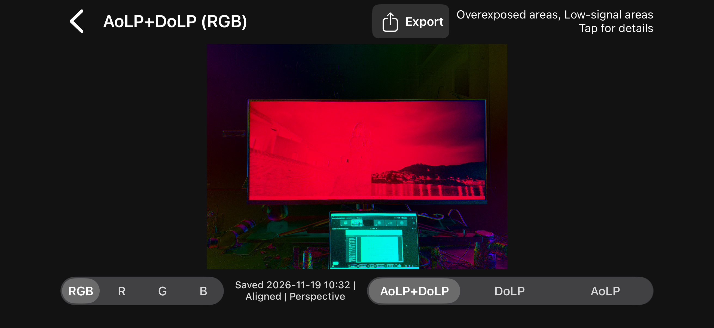

S012Cam
S012Cam App
認識 S012Cam 的用途與功能：看見線偏振、比較不同色彩通道，並保留量測資料。
iPhone 偏振相機 · iOS 15.6 或更新版本
讓光的偏振變成看得見的影像。
一般照片記錄明暗與顏色。S012Cam 再加入線偏振的方向與程度，幫助你探索玻璃反光、藍天散射、LCD 螢幕與透明材料中的偏振現象。適合教學、動手實驗與偏振影像觀察。
App 利用線性偏振片在四個角度拍攝的 RAW（DNG）影像，計算同一場景的線偏振分布。Polarizer Rotator 提供可定位的角度，可作數值參考；手持偏振片、手動估計角度則適合觀察圖樣，不宜作定量參考。
一個場景，三種偏振資訊。
Fig. 1 是 S012Cam 的實際結果畫面。除了看整張影像的偏振分布，也能查看局部數值。

偏振方向 AoLP
看線偏振電場沿哪個軸振動。不同色相呈現不同方向。
線偏振度 DoLP
看線偏振成分有多強。比較同一場景不同區域的偏振程度。
RGB 與單色通道
比較紅、綠、藍波段的偏振差異，發現一般彩色照片不容易看出的資訊。
Fig. 2 示範局部讀值：這片 LCD 的選取點具有很強的線偏振。這是單一測試範例，並非所有螢幕的共同數值。

從拍攝到分析。
協助完成四角度拍攝
Gyro 模式感應轉動後自動接續拍攝；Timer 提供固定間隔拍攝。輪廓輔助、模糊與位置檢查，幫助取得可用的一組照片。
保留拍攝控制
支援快門優先、曝光補償、計算解析度與可用鏡頭選擇，兼顧拍攝條件與計算速度。
保留與匯出資料
量測保留在 iPhone。可保留原始 DNG、分享 PNG，或匯出 32 位元浮點 TIFF 數值圖供後續分析。
相容性
適用於 iOS 15.6 或更新版本的 iPhone，以 iPhone 16 Pro 開發與測試。可用鏡頭依手機型號而定；舊款 iPhone 計算一次量測可能需要較長時間。
開始使用 S012Cam。
使用手冊依手持／腳架固定，以及 Gyro／Timer 分類，說明配件準備、拍攝步驟、相機設定、結果判讀與匯出細節。